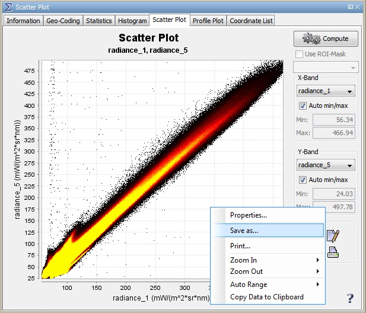

IMPORTANT NOTE: This help page refers to an outdated user interface. It will be updated for the final BEAM 4.7 release.
Scatter Plot Display
This dialog allows you to plot one variable against another.
In order to plot them, these variables must be already displayed as bands.
Otherwise the values would not be present to VISAT, except for the tie
point data (latitude, longitude etc.). If you consider the following figure,
you see the plot of longitude against latitude of a MERIS product.
The variables to be used as abscissa (X-Band) resp. ordinate (Y-Band)
can be selected from the two drop-down menus (red ellipses).

Context Menu
A click with the right mouse button on the diagram brings up a context menu
which consists of the following menu items:
- Properties...
Edit several properties (colors, axes, etc.) of the diagram.
You can also use the  on the right 'Plot' panel.
on the right 'Plot' panel.
- Save As...
Save the diagram as image (PNG).
You can also use the  on the right 'Plot' panel.
on the right 'Plot' panel.
- Print...
Print the diagram.
You can also use the  on the right 'Plot' panel.
on the right 'Plot' panel.
- Zoom In
- Both Axes - Zoom in on both axes.
You can also use the  on the right 'Plot' panel.
on the right 'Plot' panel.
- Domain Axes - Zoom in only on the domain axis.
- Range Axes - Zoom in only on the range axis.
- Zoom Out
- Both Axes - Zoom out on both axes.
You can also use the  on the right 'Plot' panel.
on the right 'Plot' panel.
- Domain Axes - Zoom out only on the domain axis.
- Range Axes - Zoom out only on the range axis.
- Auto Range
- Both Axes - Adjusts both axes to the full data range.
You can also use the  on the right 'Plot' panel.
on the right 'Plot' panel.
- Domain Axes - Adjusts the domain axis to the full data range.
- Range Axes - Adjusts the range axis to the full data range.
- Copy Data to Clipboard
This will copy the diagram data as tabulated text to the system clipboard.
The copied text can then be pasted directly into a spreadsheet application
(e.g. Microsoft® Excel).